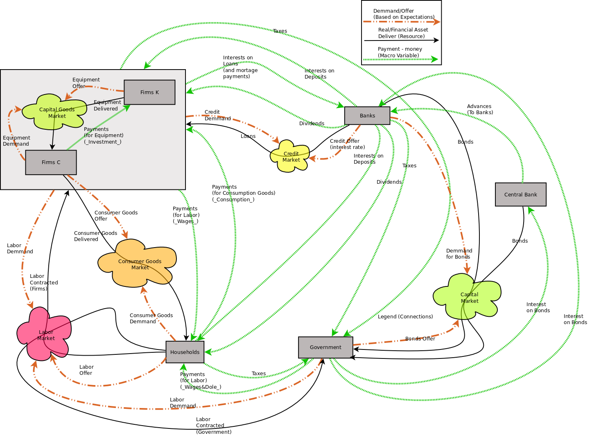
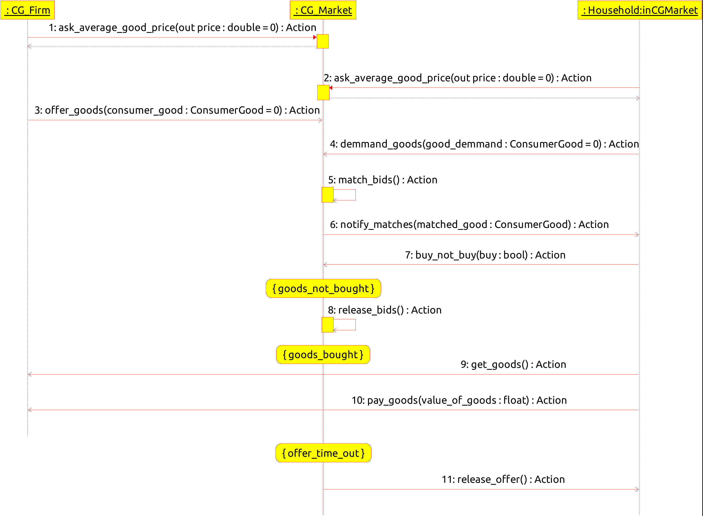

Baseline Macroeconomic Model¶
This model is based in a paper by Caiani et al (2016) what implemented a benchmark stock flow consistent macroeconomic model. This model was implemented in java using a tool named JABM and is available in the github page of Antoine Godin
A more detailed description of the agents equations implemented in our model can be found in this pdf document
Implementation¶
Here we implement a version of the Benchmark Model
Execution¶
The model is executed using a .sh file ipd.sh that runs the model and the R markdown file macro_Caiani.rmd that generates the report with the simulation results that can be seen in this html file as a sample of a typical run of the simulation
To execute the model go to the Macroeconomic Model folder (examples/macro_model) Open a bash console and write:
$ ./macro_Caiani.sh
The results will be show in a browser (look for the file ipd.html in the folder ‘results’)
Detailed Description¶
The figure can be described with the elements below:
The gray rectangles are the agents. We have 6 types of agents in the model:
- Households - Households that provide work for firms and government and purchase final consumer goods.
- Firms_C - Firms that produce consumer goods - that produce consumer goods and offer them to families. In our model, for now, only Households participate in final consumption.
- Firms_K - Firms producing capital goods. Which produce and sell equipment to consumer goods firms.
- Government - The Government, which hires civil servants, charges taxes and eventually offers bonuses to capital market agents (Banks and Central Bank)
- Banks - Banks have 3 specific roles in the model. The first is to be the deposit repositories for all agents. Monetary availability is then provided by the banks and partially controlled by the Central Bank. Banks also demand government bonds.
- Central Bank - The Central Bank buys government bonds and offers cash advances to banks.
Firms (producers of Consumer Goods and Capital Goods) can be derived from a more generic class (firm) and have their behavior and the objects they handle specialized. This relationship is important for specific applications, such as the Jadson thesis and the Geissiane thesis, we can specialize firms for specific modeling purposes.
Households, specifically in this model, are generic, but may eventually be specialized to present different behaviors or have specific characteristics that reflect the diversity of types of households based on demographic and economic data (or microdata).
Banks are the only type of financial agent in the model, but in a more specific application they can specialize banks and the financial market.
The markets¶
The markets are a subclass of Spaces. The idea here is that markets are the object that enables communication between agents. In an eventual parallel implementation, the markets (spaces) may have the role of intermediating (and possibly controlling, via schedule) the execution and communication of the agents (or, at least, the specific actions of the agents in specific markets). The Markets here are represented by the “clouds” that connect the agents.
There are 6 markets in the model:
- DepositsMarket - It is the deposit market. It is the most critical market for this model, as it stores all financial stocks of agents and is also the destination for all financial flows in the model. The number of connections in this market is so great that it was decided not to include it explicitly in the figure. Financial flows (dashed green in the figure) are represented by direct connections between agents, but, in fact, they are credit and debit accounting operations. The deposit market is probably the critical class in representing the model’s stocks and financial flows (therefore it is the critical structure for a Stock Flow Consistent model)
- LaborMarket - It is the job market. There Households offer their work capacity (in a certain number of hours, perhaps as well as their offer price per hour of work. Firms and the government “post” the labor demand they have in the labor market (in terms of hours of work ???) and the demand price of the work. Eventually, some process of selection (matching) of supply and demand is done and the work is contracted (by FirmsC, FirmsK and Government) and wages as well as wages (ie the total value of the contracted working hours) are paid to households. One possible thing here is to do some kind of machting as an algorithm within the labor market. If that, if possible, is a solution that is likely to reduce the computational cost of this process If not, the interaction protocols between agents and markets (not just the job market) need to be carefully specified in order to generate the least possible overhead in the model.
- ConsumerGoodsMarket - The consumer goods market is where the final demand (for consumer goods) takes place. In it, FirmsC and Households interact in the model. The protocol is essentially the same. Families post the demand for consumer goods at a given demand price and firms post the supply of consumer goods at a given offer price. Then there is some type of matching mechanism, which, as mentioned above, may or may not be interactive (that is, resolved in more than one cycle or not). Consumer goods are then delivered by FirmsC to Households, who pay for them in the Deposit Market.
- CapitalGoodsMarket - The capital goods market is where the Investment is made. FirmsC demand capital goods (Equipment) and post this demand on the market. FirmsK offer this equipment on the market. The capital goods market needs to address some critical aspects in macroeconomic models, namely: Capital goods (more specifically called equipment here, which can be a specific object in the implementation) have characteristics of labor productivity (\(\frac{Y}{L}\)) and capital productivity (\(\frac{Y}{K}\)) that need to be considered. These productivities can be different, giving rise to possible differences in capital productivity between firms (or, possibly, the existence of technological innovation incorporated in the production of consumer goods). Capital goods have a life span and a depreciation - which affects their present value (NPV) and, eventually, their productivity per unit of time (\(\frac{Y}{t}\)) or per unit of work ( \(\frac{Y}{L}\)). The production function of firms needs to be designed considering the fact that, eventually, each equipment may have different productivity and, therefore, \(\frac{Y}{L}\).
- CreditMarket - The credit market It has the function of allowing the borrowing of credit resources by the Firms, and eventually, in a more open model, by the families. The credit supply is made by the banks at a certain offer interest rate and the credit demand is made by the Firms at a certain demand interest rate, the allocation of credit (loans) is then resolved (with one or more interactions ), and transferred via the deposit market. Firms then pay principal and interest on loans to banks via deposit markets.
- CapitalMarket - The capital market, in this specification, currently has only government bonds. The government offers a certain amount of bonds in the credit market with a certain offer interest rate, banks offer a demand for bonds at a certain interest rate in the credit market, these bonds are eventually purchased by banks at a certain final purchase interest rate. Bonuses not purchased by banks are purchased by BACEN. The government pays the principal and interest to banks and the central bank via the deposit market. Bonuses here are an object that has similar characteristics to the loan. Check the consistency of this statement.
The Connections¶
There are three types of flow in this representation:
- DemmandOffer - Demand, supply (The brown flow, with dots). It is the flow based on the expectations of the agents. The demand or supply is an order or the supply of a certain quantity of Goods / Services. Obviously, demand is what agents want to buy and supply is what agents want to sell. Starting prices are the prices that agents expect to obtain. Contract prices are resolved via some interaction protocol.
- RealOrFinancialResource - Real or financial resource delivered (solid black). This is the flow that corresponds to the transfer of the Resource (real, such as consumer goods or equipment, or financial, such as loans or bonds from the selling agent to the buying agent. This flow is transferred from one agent to the other and, eventually, generates an obligation (such as a loan or bonus) or an increase in productive capacity (such as equipment) that will take place over multiple time intervals. Or, they satisfy the final demands of agents (consumer goods). Resource flows imply the transfer of ownership of a particular resource among agents. This may or may not occur entirely within the market object implemented in the model or be part of the agents’ code.
- Payment - Cash Payment. This is the payment between agents made for any transaction within the deposit market. When a transaction is made between agents, the buying agent transfers the purchase amount to the selling agent within the deposit market.
note: here it is worth checking the possibility of creating a Bookkeeper class that would be responsible for financial flows and transfer of resources. The idea is that the better specified and (using inversion of control) the interaction between agents and markets in terms of transferring resources or transactions, the better and more efficient the implementation will be. In this case, the user of the model would need to care more about the decision-making processes and the design of the model, leaving the accounting part to this specialized object (the bookkeeper).
Specifying the Protocol¶
An example of an interaction in the CGMarket (a Space) for buying consumer goods
There is, most likely, some generality in the interaction between agents via markets. There will be an initial specification here of what can be considered the generic interaction protocol:
- Offer - Offering agent, based on their needs and expectations, in a process analogous to the previous one, produces the offer for a given resource (Consumer Goods, Equipment, Loan, Bonus) at a certain expected offer price.
- Demand - The demanding agent, based on its internal formulation of expectations or needs, produces the demand for a certain resource (Consumer Goods, Equipment, Loan, Bonus) at a certain expected demand price.
- Asynchrony and parallelism - Supply and demand are asynchronous and parallel there is no logical prerequisite (eventually there are performance considerations) that oblige the offering agents to all offer and then the demanding agents all to demand. This process can be continuous and resolved in parallel in the market. Here, obviously, this implies the assumption of limited rationality and the absence of global coordination between the agents (there is no auctioneer Walrasiano deciding the optimal prices).
- Realization - The process of adjusting prices for a set of final prices (which can be multiple).
- Delivery - After closing the contracted price and quantity (each agent, the process being asynchronous), deliver the appeal to the claimant.
- Payment - Delivered the resource, the agent pays the contracted price.
note: Here this protocol could be completely controlled by a class made especially to map the interaction. This class could be the Bookkeeper. But this needs to be specified in more detail.